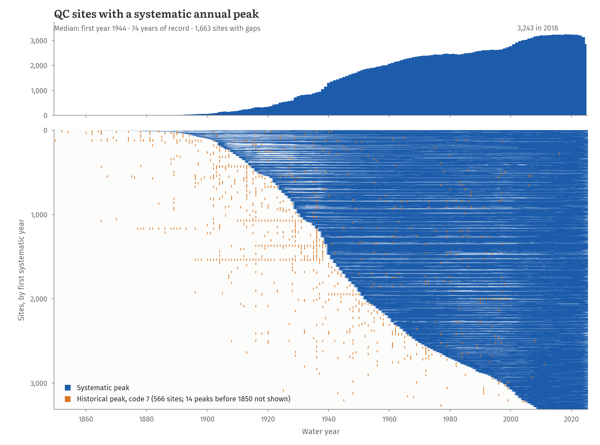
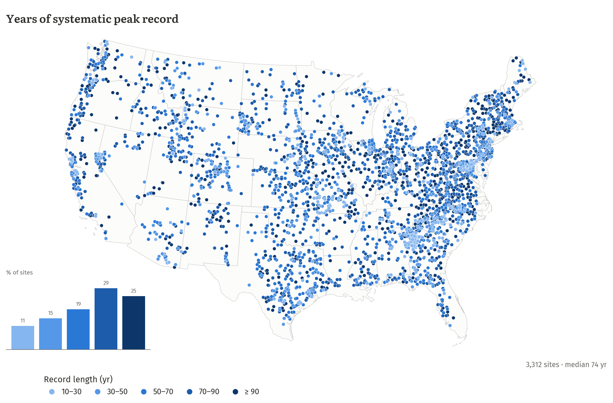
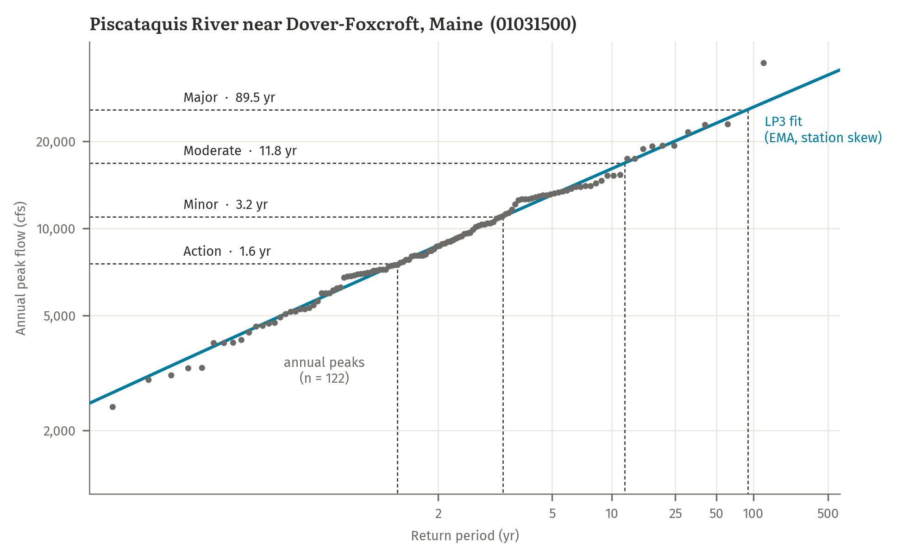
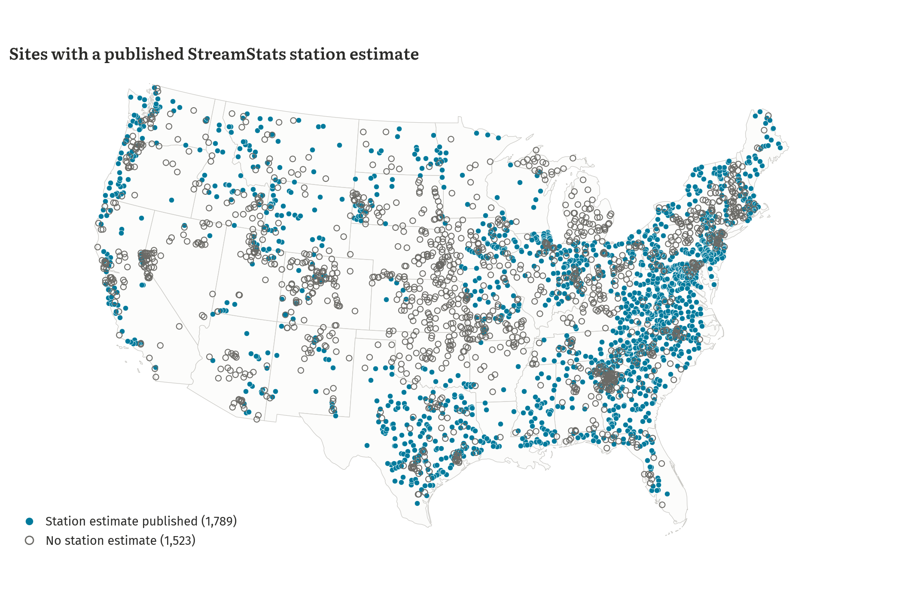
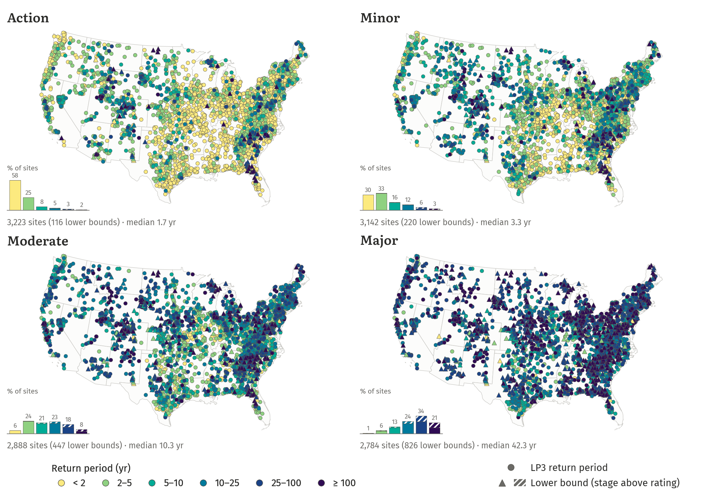
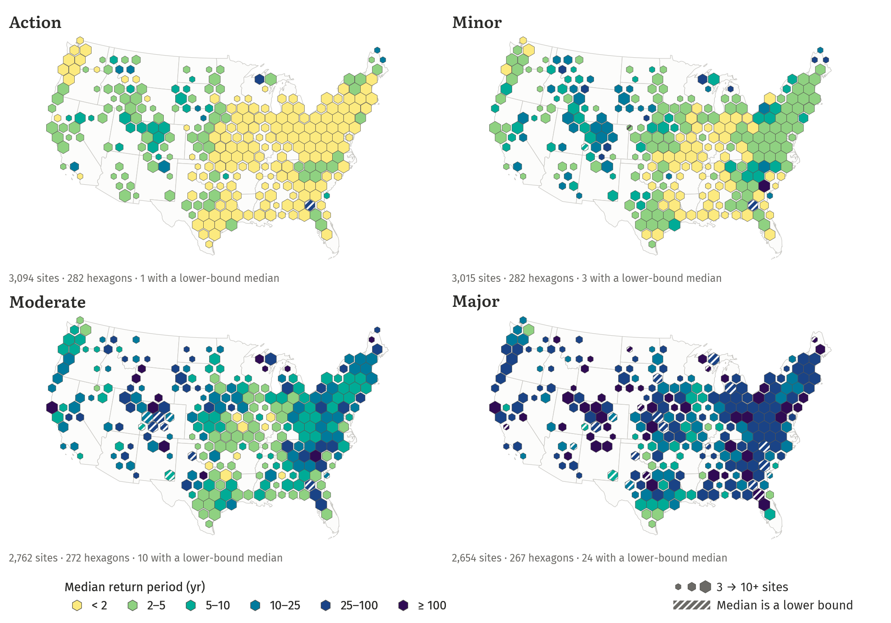
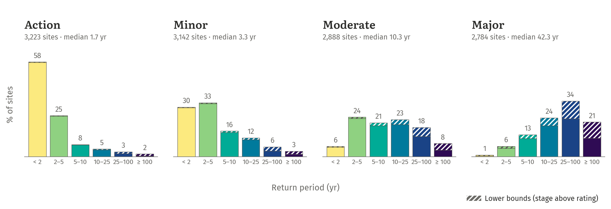
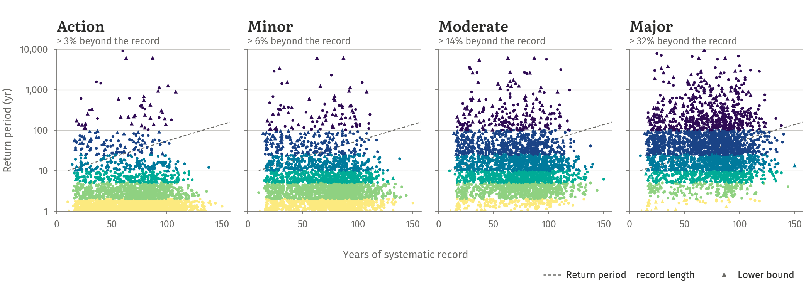
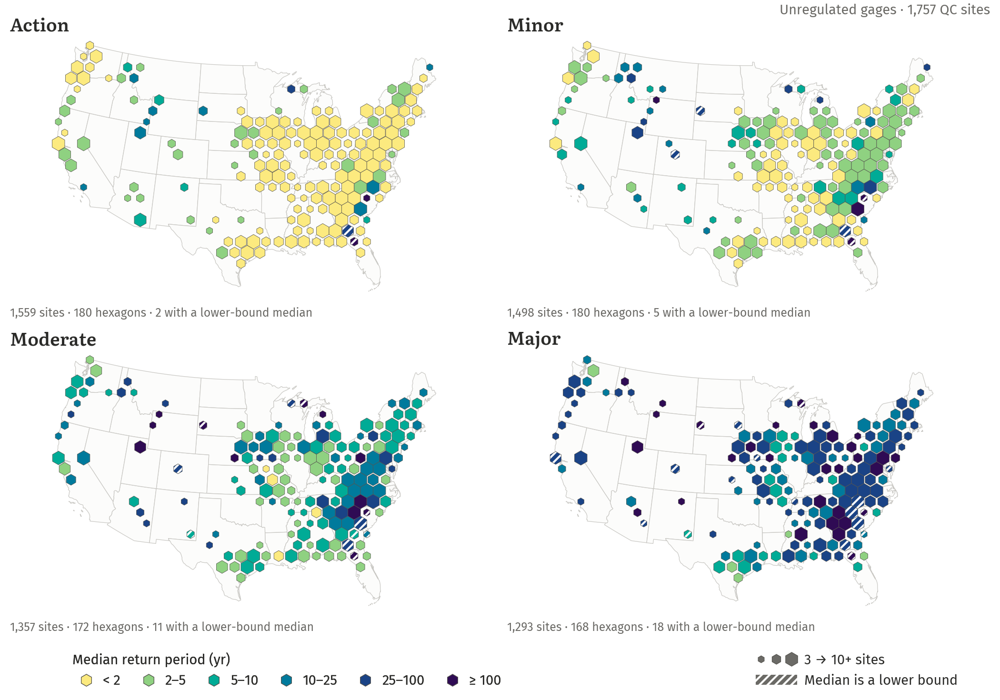
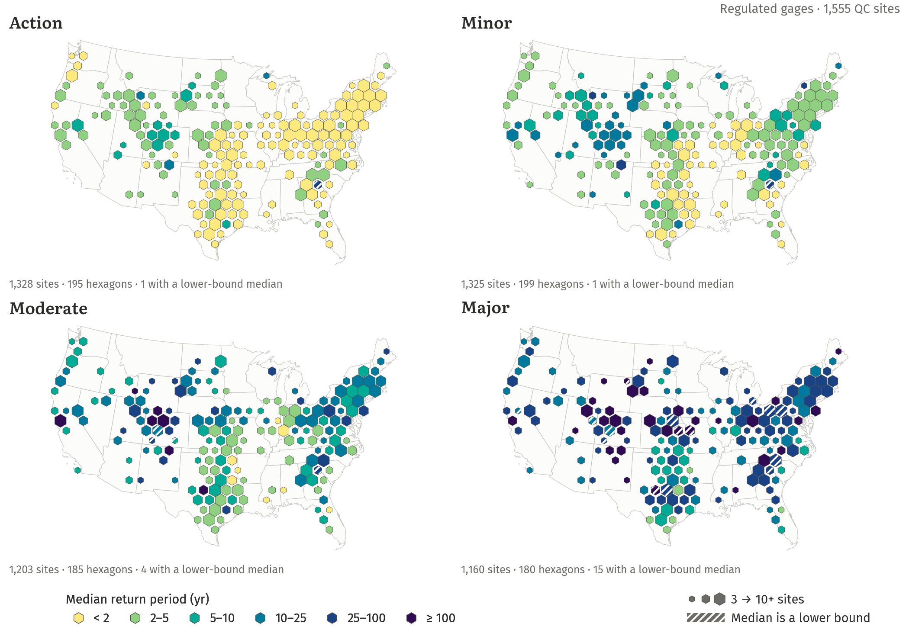

LP3 return periods of action, minor, moderate, and major flood stages across CONUS
2026-10-21
| Level | Defined by |
|---|---|
| Action | Prepare to act |
| Minor | Minimal or no property damage |
| Moderate | Some inundation; evacuations possible |
| Major | Extensive inundation and damage |
Goal: the annual exceedance probability (AEP) of every NWS threshold at every gage with enough peak-flow record.
| Step | Source | Sites |
|---|---|---|
| USGS stream gages (study set) | NWIS site metadata | 9,067 |
| Daily discharge record | NWIS daily values | 8,966 |
| Observed stage record | NWIS daily / instantaneous values | 6,630 |
| Matched to an NWS forecast point | HADS crosswalk | 5,611 |
| At least one threshold flow | NWPS flows, else USGS rating curve | 3,350 |
| LP3 fit passes QC (≥ 10 peaks, non-degenerate) | NWIS annual peaks | 3,312 |
Threshold stages and flows from the NWPS API; NWM reach IDs from NWPS, with the USGS NLDI as a fallback (6,604 of 6,605 gages). Median systematic record among QC sites: 74 years (IQR 48–90).
| Level | NWPS | Rating | Above rating |
|---|---|---|---|
| Action | 656 | 2,486 | 125 |
| Minor | 628 | 2,326 | 235 |
| Moderate | 568 | 1,905 | 477 |
| Major | 546 | 1,444 | 873 |
At the major level, 30% of thresholds are above the rating, and they are the rarest floods.
| Peaks | Treatment |
|---|---|
| Code 1 (daily mean) | dropped (3,616) |
| Code 4 / 8 | left / right censored |
| Code 7 (historical) | historical period (566 sites) |
| MGBT low outliers | censored PILFs (871 sites) |
| Code 5 / 6 (regulation) | kept as observed |

Systematic years exclude code-1 (daily mean) peaks; code-7 historical peaks enter the EMA through their historical period.

74% of sites have at least 50 years of record and 96% run through 2024 or later. Short records cluster in the Southeast Piedmont and the Mid-Atlantic.
Effect where regional skew exists:
| Quantile | Median change | 90th pct. |change| |
|---|---|---|
| Q2 | −0.2% | 3% |
| Q10 | +0.2% | 2% |
| Q100 | +1.1% | 14% |
| Q500 | +1.8% | 23% |
Typical flows barely move; the cost is in the tails, which is where regional skew helps.

Each threshold flow is read across to the LP3 curve: AEP = 1 − F(Qthreshold), return period = 1 / AEP.
| Quantile | n | R² (log) | Within 25% |
|---|---|---|---|
| Q2 | 1,652 | 0.97 | 90% |
| Q10 | 1,616 | 0.97 | 91% |
| Q100 | 1,718 | 0.95 | 81% |
| Q500 | 1,670 | 0.92 | 71% |

Coverage follows state USGS reports and skips regulated gages often.



Lower bounds (hatched) are a small share at action and minor; at major they are a third of the 25–100 yr bar and nearly half of the ≥ 100 yr bar.

At least 32% of major thresholds have return periods longer than the record behind them: those rest on the LP3 tail, not on observed floods.
| Level | Sites | Lower bounds | Median RP |
|---|---|---|---|
| Action | 3,223 | 116 | 1.7 yr |
| Minor | 3,142 | 220 | 3.3 yr |
| Moderate | 2,888 | 447 | 10.3 yr |
| Major | 2,784 | 826 | 42.3 yr |
Major: 42.3 years with the bounds, 24.3 years if they are dropped.
| Level | Unregulated | Regulated | All |
|---|---|---|---|
| Action | 1.5 yr | 2.0 yr | 1.7 yr |
| Minor | 2.9 yr | 3.9 yr | 3.3 yr |
| Moderate | 10.3 yr | 10.4 yr | 10.3 yr |
| Major | 48.8 yr | 37.4 yr | 42.3 yr |
Kaplan–Meier medians, lower bounds treated as right-censored. Sites: 1,757 unregulated, 1,555 regulated.

1,757 QC sites with no or minor regulation: upstream storage < 0.10 years of mean annual runoff and no regulation peak codes.

1,555 QC sites with moderate or major regulation: storage ≥ 0.10 years of mean annual runoff, or NWIS peak codes 5 / 6.
Caveats
Next steps
Return periods of NWS flood thresholds